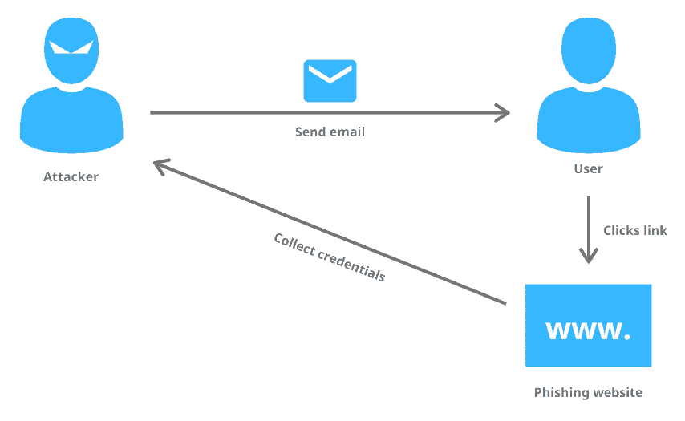

Introduction to cibersecurity
Basic concepts of cibersecurity, most comon tipes of atacks and criptografy
Cibersecurity is the combination of methods and tools implemented with the purpouse of protecting computer asets (e.g. information or SW and HW asets) against all threats. In this proces is of the utmost importance the colaboration of the people as making them aware of their role in cibersecurity is what may diferentiate a secure sistem from a compromised one.
Concepts
In cibersecurity whe defie as a damage all the negative efects we suffer when a
informatic sistem fails.
An atack is a deliberate act that tries to cause certain damage to
a sistem.
We define as a risk (R) the product between the potencial damage
(d) an atack may cause and the probability that it will happen (pd):
Whe understand as a
A vulnerability is a weak point in the sistem that allows the atack to end sucessfully.

Cibersecurity, at the moment, is one of the greatest carrer paths for a lot of the STEM graduations, if we take a peak
at how many isues related to this field have been reported in the last decade we may see how there is a upwards trend.
This atacks werent always as comon place but since the 2000's and the introduction of viruses such as "ILOVEYOU" the
amount of viruses and atacks that exist have skyrocketed.
Ciber atacks are very diferent from each other as it depends
of the atacker and what their intent is. Some examples of diferent tipes of atacks are the following:
Listening to information:
Eavesdropping (listening in secret)
Sniffing (stealing information)
Snooping (spying information on the internet)
Shoulder surfing (direct observation)
Identity theft:
Masquerading
Spoofing
Tampering:
Web Parameter Tampering
Scavenging :
Ex.: trying to gain acess to temporary files
Tampering:
Web Parameter Tampering
Memory gestions exploits:
Buffer overflow
DoS:
Tear Drop
Ping of Death
ICMP flooding
Smurf
Fraggle
Syn Flooding
Passwords
Routing protocols
SMTP,FTP,HTTP
Social engineering
...
TCP SYN flood attack
Starting a lot of TCP conexions (from a fake IP adress if able) and not sending the ACKs.

Man in the middle (MitM)
The atacker intercepts a comunication between 2 devices, this tipe of atack is comonly used to spy, decive the victim by changing the content he is reciving or to "catfish" the victim.

Phishing
Sending a mesage to the victim acting as a service provider where you ask the victim to "reenter" so you can steal his acess information.
Drive-by attack
Making the victim enter a compromised server where the victim will automatically download malware.

Ransomware
Blocking access to the victim to his computer until he pays the hacker.